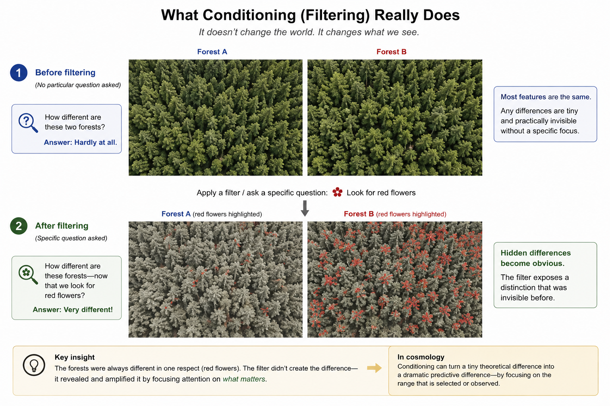

At first sight, two forests may appear almost identical. The same trees, the same paths, the same landscape. Only after we begin looking for a particular feature—a single species of flower, a certain kind of bird, or the traces of an animal—do differences that previously seemed insignificant suddenly become obvious. The forests themselves have not changed. Only the question we ask has changed.

Darwin's finches illustrate the same idea in a very different setting. Before the drought, small differences in beak shape had little consequence. After the drought, those same differences became decisive for survival. The birds did not change overnight. What changed was the environment. The drought transformed an almost insignificant variation into an important one.
This is one of the recurring themes of science. Nature does not treat every distinction equally. Some differences have profound consequences. Others gradually fade into irrelevance. One of the central tasks of physics is to discover which differences the natural world preserves and which it does not.
These essays ask whether a similar question may arise in quantum cosmology. If the universe admits many possible branch histories, why should some distinctions between those histories matter while others do not? Could there exist physical principles that determine which differences remain relevant for prediction and which become effectively indistinguishable? The mathematical framework discussed in the accompanying notes explores one possible way of formulating this question. It does not claim to answer it. It attempts to ask it precisely.
Scientific progress often begins when familiar phenomena are viewed from a new perspective. Darwin did not discover birds. He discovered a new way of understanding the differences between them. Likewise, modern cosmology is not simply concerned with describing the universe we observe. It also asks why certain distinctions become physically meaningful while others do not.
Whether nature really possesses such a mechanism remains an open scientific question. Perhaps the answer will ultimately be yes. Perhaps it will be no. Either outcome would teach us something about the structure of the universe.
For now, the more important lesson may be a broader one. Understanding nature is rarely a matter of collecting more and more facts. It is a matter of learning which differences matter—and why.